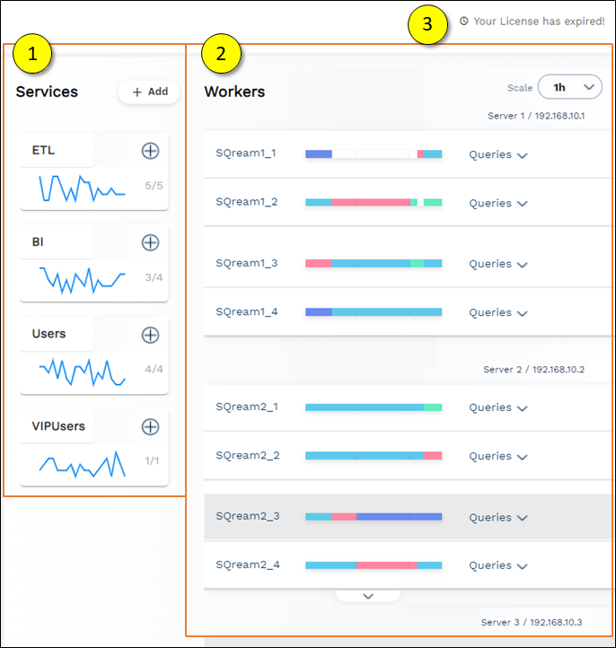
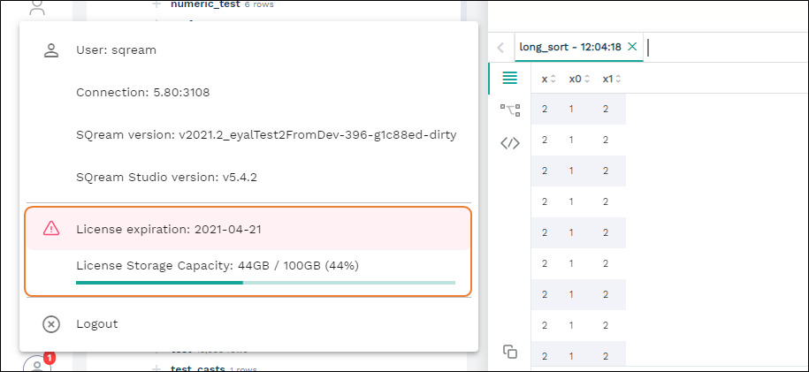

Monitoring Workers and Services from the Dashboard
The Dashboard is used for the following:
Monitoring system health.
Viewing, monitoring, and adding defined service queues.
Viewing and managing worker status and add workers.
The following is an image of the Dashboard:
You can only access the Dashboard if you signed in with a SUPERUSER role.
The following is a brief description of the Dashboard panels:
No. |
Element |
Description |
|---|---|---|
1 |
Used for viewing and monitoring the defined service queues. |
|
2 |
Monitors system health and shows each Sqreamd worker running in the cluster. |
|
3 |
Shows the remaining amount of days left on your license. |
Back to Monitoring Workers and Services from the Dashboard
Subscribing to Workers from the Services Panel
Services are used to categorize and associate (also known as subscribing) workers to particular services. The Service panel is used for viewing, monitoring, and adding defined service queues.
The following is a brief description of each pane:
No. |
Description |
|---|---|
1 |
Adds a worker to the selected service. |
2 |
Shows the service name. |
3 |
Shows a trend graph of queued statements loaded over time. |
4 |
Adds a service. |
5 |
Shows the currently processed queries belonging to the service/total queries for that service in the system (including queued queries). |
Adding A Service
You can add a service by clicking + Add and defining the service name.
Note
If you do not associate a worker with the new service, it will not be created.
You can manage workers from the Workers panel. For more information about managing workers, see the following:
Managing Workers from the Workers Panel
From the Workers panel you can do the following:
Viewing Workers
The Worker panel shows each worker (sqreamd) running in the cluster. Each worker has a status bar that represents the status over time. The status bar is divided into 20 equal segments, showing the most dominant activity in that segment.
From the Scale dropdown menu you can set the time scale of the displayed information You can hover over segments in the status bar to see the date and time corresponding to each activity type:
Idle – the worker is idle and available for statements.
Compiling – the worker is compiling a statement and is preparing for execution.
Executing – the worker is executing a statement after compilation.
Stopped – the worker was stopped (either deliberately or due to an error).
Waiting – the worker was waiting on an object locked by another worker.
Adding A Worker to A Service
You can add a worker to a service by clicking the add button.
Clicking the add button shows the selected service’s workers. You can add the selected worker to the service by clicking Add Worker. Adding a worker to a service does not break associations already made between that worker and other services.
Viewing A Worker’s Active Query Information
You can view a worker’s active query information by clicking Queries, which displays them in the selected service.
Each statement shows the query ID, status, service queue, elapsed time, execution time, and estimated completion status. In addition, each statement can be stopped or expanded to show its execution plan and progress. For more information on viewing a statement’s execution plan and progress, see Viewing a Worker’s Execution Plan below.
Viewing A Worker’s Host Utilization
While viewing a worker’s query information, clicking the down arrow expands to show the host resource utilization.
The graphs show the resource utilization trends over time, and the CPU memory and utilization and the GPU utilization values on the right. You can hover over the graph to see more information about the activity at any point on the graph.
Error notifications related to statements are displayed, and you can hover over them for more information about the error.
Viewing a Worker’s Execution Plan
Clicking the ellipsis in a service shows the following additional options:
Stop Query - stops the query.
Show Execution Plan - shows the execution plan as a table. The columns in the Show Execution Plan table can be sorted.
For more information on the current query plan, see SHOW_NODE_INFO. For more information on checking active sessions across the cluster, see SHOW_SERVER_STATUS.
Managing Worker Status
In some cases you may want to stop or restart workers for maintenance purposes. Each Worker line has a ⋮ menu used for stopping, starting, or restarting workers.
Starting or restarting workers terminates all queries related to that worker. When you stop a worker, its background turns gray.
License Information
The license information section shows the following:

The amount of time in days remaining on the license.
The license storage capacity.